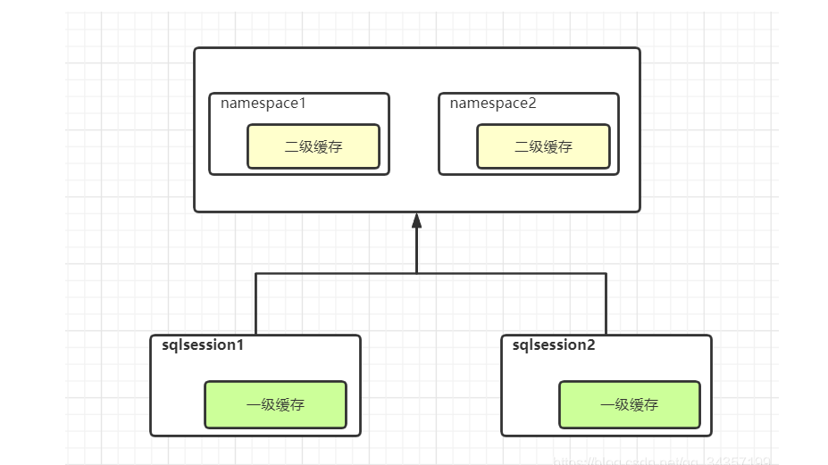
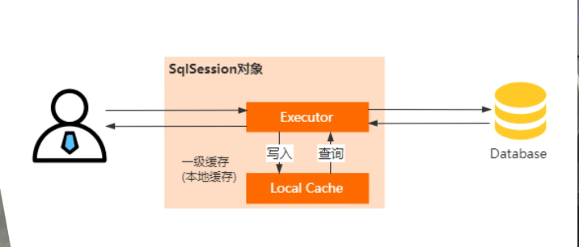

Mybatis中有两级缓存，缓存的目的就是不让每一次数据库查询都到数据库进行，减少数据库的访问与交互，提高了数据的检索效率
1.一级缓存
一级缓存是SqlSession级别的一个缓存，也就是用户会话级别的，一个用户都需要创建一个SqlSession来执行，一级缓存也叫本地缓存，mybatis会将查询成功获得的数据缓存到一级缓存中，后续的Sql在命中缓存的情况下，直接从本地缓存读
2.二级缓存（跨SqlSession的缓存）

只要有一个用户的SqlSession拿到了数据，就会将其存入到二级缓存中
一二级缓存的实现原理
先看一级缓存：在SqlSession中会支持有一个Executor，每一个Executor又有一个LocalCache的对象，当用户发起请求的时候，Mybatis根据语句到localCache中进行查询，当然命中了就会返回数据，没有命中再到数据库中进行查询，查询完之后将其存入到SqlSessiond的LocalCache中，所以一级缓存的生命周期是SqlSession的生命周期，注意在多线程情况下一级缓存可能产生脏读。

再看二级缓存（全局缓存）：在原来的Executor上加了一个装饰，引入了一个装饰器叫CachingExecutor，在进入一级缓存之前先进行二级缓存的查询（通过上面的装饰器），最后进行数据库的查询，缓存粒度控制在了nameSpace命名空间的级别，并且可以通过Cache这个接口实现不同缓存实现类的一个组合，提高对Cache的一个可控性。

MySQL Query Cache
首先要明白一个概念，二级缓存是基于Mybatis的，也是基于SqlSession的，而我们在慢查询中所需要关闭的Cache则是Mysql的查询缓存，两者完全不一样
Mysql的查询缓存因为存在的弊端基本不在使用了，建议采用其他的外置缓存，比如Redis/memcache，因为后者的外置缓存支持分布式环境
MySQL Query Cache的实现原理
Mysql会将查询的select语句以及其查询结果集，实现类似于Map的K-V结构的存储，也就是存在了一个Hash映射，当SQL进行查询时，查找逻辑是先对Sql进行权限校验，使用Query Cache来查找结果，（SQL必须完全相同，一个空格都不行，字符集也必须完全相同是严格的Sql映射）
如果映射中没有，会将查询结果放入缓存表，所以在存入时以及查找时会有额外的性能消耗。
最主要的作用是如果在映射中能直接查到就好了，但是由于这种不确定性太大，所以8.0被取消了
不确定的数据不会被缓存，比如使用了Date()函数等情况
查看缓存参数状态 > SHOW VARIABLES LIKE ‘%query_cache%’;
缓存的映射关系是基于表的，所以当一张表的结构发生改变的时候，或者表处于写入的状态（被锁住），那么此时的缓存都是失效的，当然修改数据也会使查询到数据的SQL缓存失效而产生大量额外损耗
对于写频繁的系统，适合用mysql查询缓存么？
不适合：对于某些写频繁的系统，开启Query Cache功能可能并不能让系统性能有提升，有时反而会有下降。
原因是MySql为了保证Query Cache缓存的内容和实际数据绝对一致，当某个数据表发生了更新、删除及插入操作，MySql都会强制使所有引用到该表的查询SQL的Query Cache失效。对于密集写操作，启用查询缓存后很可能造成频繁的缓存失效，间接引发内存激增及CPU飙升，对已经非常忙碌的数据库系统这是一种极大的负担。
官方在Mysql5.6进行了联合索引优化：索引（条件）下推
索引下推也就是条件的向下推断，在查询二级索引时，判断并列的查找条件是不是满足。
其实从底层讲是不准确的
索引下推的下推其实就是指将部分上层（服务层）负责的事情，交给了下层（引擎层）去处理。
以查询条件为前面模糊查询的同时进行其他的等值判断为例
select * from tuser where name like ‘张%’ and age=10;
数据库表，表里创建联合索引（name, age）。：
在没有使用ICP的情况下，MySQL的查询：
-
在MySQL 5.6之前，存储引擎根据通过联合索引找到
name like '张%'的主键id（1、4），逐一进行回表扫描，去聚簇索引找到完整的行记录，server层再对数据根据age=10进行筛选。 -
进行了两次回表操作，一条数据一次，把我们联合索引的另一个字段
age浪费了。
使用ICP的情况下，查询过程(注意借助了联合索引)：
- 存储引擎根据（name，age）联合索引，找到
name like '张%'，由于联合索引中包含age列，所以存储引擎直接再联合索引里按照age=10过滤。按照过滤后的数据再一一进行回表扫描。
利用索引快的特点进行过滤，相对于索引来说回表就相当于又进行了一次查询，是非常麻烦的
这里我们将不符合的 “张猛”给筛掉之后，直接进行一次回表就可以了
为什么张三还要回表呢？模糊查询和等值查询不都满足了吗
对于数据库是不知道的，而且这里举的例子是查询条件正好是联合索引，如果还有其他的非索引数据，当然还要进行回表进行判断了，索引下推只是借助联合索引尽量减少资源浪费的优化手段。
如果您喜欢此博客或发现它对您有用，则欢迎对此发表评论。 也欢迎您共享此博客，以便更多人可以参与。 如果博客中使用的图像侵犯了您的版权，请与作者联系以将其删除。 谢谢 ！